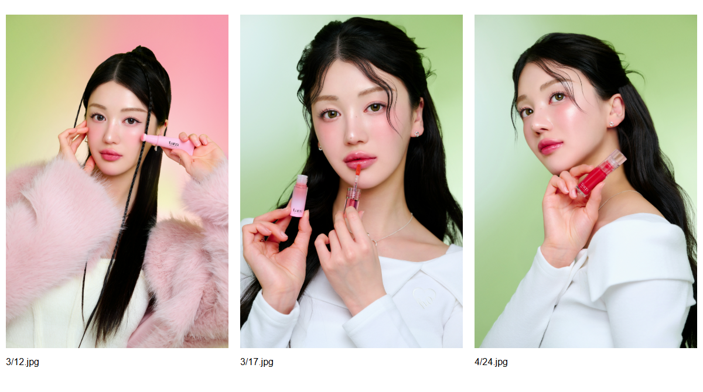

기존 탐뷰티 화보를 기준으로 다시 잡은 모델.
공식 스튜디오 촬영컷과 립오일·글로스 캠페인, 홈페이지 모델 후보를 함께 확인했습니다. 정돈된 피부와 헤어, 로즈 메이크업, 또렷한 눈매와 윤기 있는 입술을 기준으로 GPT에서 새 캠페인 컷을 제작했습니다.
먼저 확인한 기존 화보

이전 V6의 거친 피부 표현과 생활사진 같은 스타일링은 제외했습니다. 특정 인물의 얼굴을 그대로 재현하는 대신, 탐뷰티 화보의 메이크업·헤어·표정·제품 배치를 새 이미지의 기준으로 삼았습니다.
GPT 모델을 적용한 메인

선택 기준
- 정돈된 긴 머리와 흰 니트, 로즈 메이크업으로 기존 화보와 연결
- 인위적인 주근깨·얼룩을 추가하지 않은 깨끗한 베이스
- 입술 윤기와 제품을 바르는 동작이 함께 보이는 구도
- 실제 로즈 제품의 용기와 큰 팁을 시각 참고로 제공
- 제품 연출컷과 어울리는 밝은 화이트·핑크 조명
큰 팁·촉촉함·쿨링·오일 성분 설명과 실제 3컬러 사진은 유지했습니다.
모델·제품의 AI 연출과 공식 발색 사진의 역할을 구분했습니다. 원본 PNG는 1122×1402px이며 확대 생성하지 않았습니다.클로드 독립 검토
기존 스튜디오 화보, 새 이미지, PC·모바일 메인과 공식 제품 사진을 함께 검토하도록 요청했습니다. 검토 원문은 아래에 남겼으며, 사용자 승인을 의미하지 않습니다.
긴 머리·로즈 메이크업·흰 니트가 기존 화보와 연결된다는 의견을 확인했습니다. 다만 매우 매끈한 피부 표현에 AI 캠페인 느낌이 남는다는 한계도 기록했습니다. 캡을 완전히 불투명한 흰색으로 바꾸라는 제안은 공식 립오일 사용 사진의 투명 외피와 대조해 채택하지 않았습니다. 생성 컷을 실제 발색으로 쓰지 않는 원칙은 유지합니다.
검토 의견 보기
리뷰에 필요한 이미지와 프롬프트, 브리프를 모두 확인했습니다. 아래가 자문 결과입니다. **결론:** 새 모델은 V6 거부 사유 네 가지를 모두 해소했고, TAM 스튜디오 룩에 상당히 가깝습니다. 다만 캡 재질 불일치 하나는 승인 전에 고치는 편이 좋고, 립 컬러는 발색 근거로 쓰면 안 됩니다. **1. 스튜디오 스타일 적합도** - **헤어:** 긴 흑갈색 생머리, 살짝 치우친 가르마, 얼굴 옆 잔머리 한 가닥. 컨택트 시트 오른쪽 4/24 컷과 같은 문법입니다. - **메이크업:** 뺨 위쪽 로지 블러셔, 갈색 자연 속눈썹, 맑은 베이스, 글로시 립. 스튜디오 3컷의 물광 생기 톤과 맞습니다. 레퍼런스는 블러셔가 더 세고 입술이 더 도톰해서, 새 컷은 한 단계 얌전합니다. - **표정:** 정면 시선에 입꼬리만 살짝 올린 차분한 미소. 피곤하거나 나이 들어 보이지 않고 20대 중반으로 읽힙니다. 레퍼런스의 입 살짝 벌린 쿨한 표정보다는 따뜻한 쪽입니다. - **의상과 소품:** 화이트 니트 바토넥, 실버 스터드. 3/17 컷과 일치합니다. - **배경:** 레퍼런스는 핑크와 그린 그라데이션인데 새 컷은 연핑크 단색입니다. 제품 조명을 따른 결과라 페이지 톤에는 맞지만, 스튜디오 특유의 봄 느낌은 약합니다. - **솔직한 한계:** 얼굴이 매우 매끈하고 대칭적이라 교과서적 AI 미인 인상이 남습니다. 캠페인용으로는 통하지만 AI 티가 전혀 없다고 보장은 못 합니다. **2. 해부, 패키지, 레이아웃 불일치** - **캡 불일치가 가장 구체적입니다.** 실제 패키지는 흰색 불투명 캡인데, 생성 이미지는 투명 캡 안에 흰 심지가 보입니다. 제품을 아는 오너 눈에 바로 띕니다. - **보틀 비율:** 실제보다 약간 짧고 통통합니다. 로고, 투명 베이스, 코랄 액은 일치합니다. - **팁:** 넓고 둥근 플로킹 팁 형태는 실제 팁 사진과 맞습니다. - **손:** 손가락 수와 관절에 명백한 오류는 안 보입니다. 캡을 쥔 오른손 아래쪽 접힌 손가락은 원본 해상도로 한 번 더 확인을 권합니다. - **레이아웃:** 데스크톱은 이미지의 연핑크 배경과 왼쪽 크림 컬럼 사이 경계가 보입니다. 모바일은 정수리가 잘리지만 이마는 살아 있어 뷰티 크롭 범위 안입니다. 보틀 라벨은 두 뷰 모두 가려지지 않습니다. - "AI 모델 연출 이미지" 고지 문구가 이미 들어가 있는 점은 좋습니다. **3. 캠페인 연출로 한정할 것** - **모델 입술 색:** 생성 컷은 코랄에 가깝고, 실제 02 Infinite Rose 스와치는 핑크레드입니다. 발색 근거로 쓰면 안 됩니다. - 보틀 속 액 색, 팁의 착색 정도, 광택 수준, 블러셔와의 조화도 모두 연출입니다. - 실제 발색은 기존 스와치와 실제 패키지 사진에만 맡기고, 현재 페이지 구조가 그렇게 돼 있으니 그대로 유지하면 됩니다. **권장:** 캡을 흰색 불투명으로 재생성하거나 리터치 한 번이면 승인 요청을 올려볼 만합니다. 배경에 아주 옅은 그린 반사를 더하면 스튜디오 톤에 더 가까워지지만 필수는 아닙니다.
비대화식 실행 · 로컬 세션 저장 비활성화. 최종 선택과 이미지·레이아웃 확인은 제작 과정에서 별도로 수행했습니다.